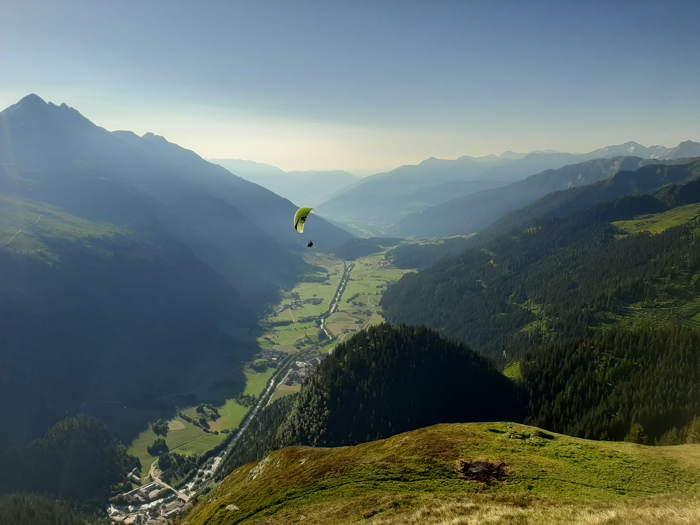
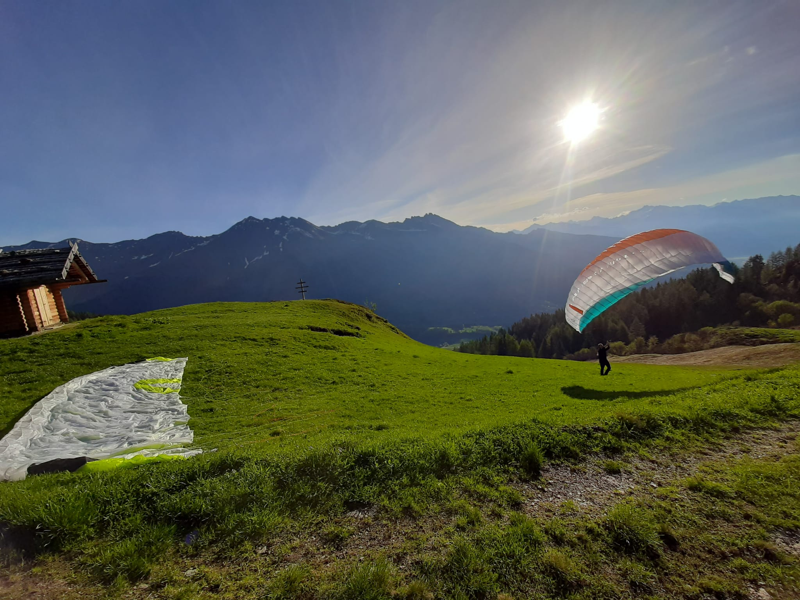

Die Startplätze

Unser Startplatz Nr. 1 in beim Tandemfliegen in Ridnaun:
bei der Prischeralm unterhalb der Wetterspitze.
Bei schönem sommerlichen Wetter haben wir hier einen angenehmen Aufwind,
der den Startvorgang fast schon kinderleicht macht.
Nach wenigen Schritten - wenn überhaupt - verliert man schon den Boden unter den Füßen
Alternativ geht es zur Gewingesalm hoch, direkt gegenüber des ersten Startplatzes.
Sollte der Wind einmal drehen, haben wir hier eine super Ausweichmöglichkeit.
Der Startplatz ist ähnlich angenehm und bestens geeignet für Tandemflüge.
